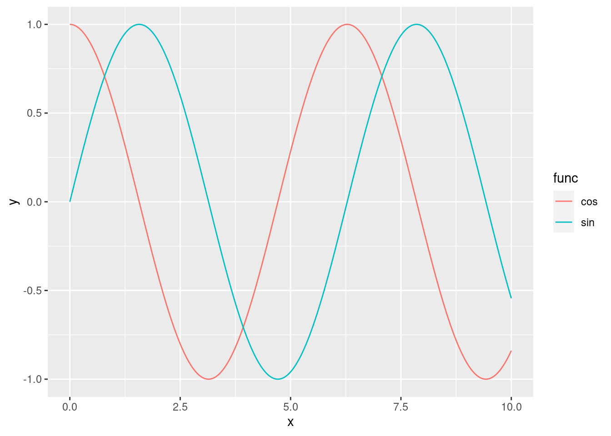

5 Data Frames and Plotting
5.1 Data Frames
library(tidyverse)## ── Attaching core tidyverse packages ──────────────────────────────────────────────────────────────────────────────────────────────────── tidyverse 2.0.0 ──
## ✔ dplyr 1.1.2 ✔ readr 2.1.4
## ✔ forcats 1.0.0 ✔ stringr 1.5.0
## ✔ ggplot2 3.4.2 ✔ tibble 3.2.1
## ✔ lubridate 1.9.2 ✔ tidyr 1.3.0
## ── Conflicts ────────────────────────────────────────────────────────────────────────────────────────────────────────────────────── tidyverse_conflicts() ──
## ✖ dplyr::filter() masks stats::filter()
## ✖ dplyr::lag() masks stats::lag()
## ℹ Use the conflicted package (<http://conflicted.r-lib.org/>) to force all conflicts to become errors5.2 Plotting with ggplot
5.2.3 Exercise: ggplots of periodic functions
In this exercises we will be plotting few sine and cosine waves. This should combine both knowledge of creating a data frame, and ggplot. The exercise has two levels of completition, a basic level where we will be plotting a sine function from 1 to 10, and an advance level where we will be displaying multiple periodic functions.
Basic. Via ggplot, plot a sinusoidal function, \(y = \sin(x)\), from 0 to 10:
You want to create a sequence of numbers,
x, of at least 100 values ranging from 0 to 10.You then want to run the sine function on this sequence to get the
yStore the results of this operation in a data frame
Plot a line using ggplot’s
geom_line().
Medium. Modify the code above to add the additional function \(y=\cos(x)\). You should get something like:

The x-axis should range from 0 to 10, with a step size of 0.01.
Use different colours for each curve (sine or cosine)
How many columns should have your dataframe?
Advanced. Using ggplot, write a program that generates the plot below:

Each subplot should be comparing sines and cosines with different frequencies. The plot should show 6 sinusoidal functions:\[\sin\left(\frac{x}{2}\right), \sin(x), \sin(2x), \cos\left(\frac{x}{2}\right), \cos(x), \cos(2x)\]
The plot should have three subplots, one for each frequency (\(\frac{1}{2}\), 1, and 2). Each subplot should contain both the sine and cosine functions, as above
Avoid computing everything by hand (e.g. copy pasting the dataframe code 6 times) or
forloop. TIP: Usemapto generate your dataframes andreduceto combine them. Use lambda functions where necessary.